МИНИСТЕРСТВО МОНТАЖНЫХ И СПЕЦИАЛЬНЫХ
СТРОИТЕЛЬНЫХ РАБОТ СССР
|
УТВЕРЖДАЮ Заместитель
министра К.К. Липодат 30 октября 1981 г. |
ИНСТРУКЦИЯ
ПО РАЗРАБОТКЕ ПРОЕКТОВ
ПРОИЗВОДСТВА РАБОТ ПО
МОНТАЖУ СТРОИТЕЛЬНЫХ КОНСТРУКЦИИ
ВСН 193-81
ММСС СССР
Инструкция устанавливает требования к составу, содержанию, порядку разработки, рассмотрения, согласования и утверждения проектов производства работ по монтажу и демонтажу строительных конструкций при строительстве (реконструкции) объектов.
С введением в действие настоящей инструкция утрачивает силу "Инструкция по составлению проектов производства работ по монтажу стальных и сборных железобетонных конструкций" МСН 193-68.
Инструкцию подготовили сотрудники ВНИПИ Промстальконструкция Ю. М. Данилевич, В. С. Зильбер, А. Д. Соколова и В. Г. Шандаров.
|
Министерство монтажных и специальных строительных работ СССР (Минмонтажспецстрой СССР) |
Ведомственные строительные нормы |
ВСН 193-81 ММСС СССР |
|
Инструкция по разработке проектов производства работ по монтажу строительных конструкций |
Взамен ВСН 193-68 ММСС СССР |
1.1. Настоящая инструкция составлена в дополнение к "Инструкции по разработке проектов организации строительства и проектов производства работ" СН 47-74 в целях отражения специфики и применительно к монтажу (демонтажу) строительных конструкций.
1.2. Инструкция устанавливает требования к составу, содержанию, порядку разработки, рассмотрения, согласования и утверждения проектов производства работ (ППP) по монтажу (демонтажу) строительных конструкций объектов*.
___________
* В дальнейшем - по монтажу (демонтажу) объектов
1.3. При разработке ППР следует выполнять требования:
государственных и отраслевых стандартов;
глав СНиП и других нормативных документов по проектированию конструкций, производству и приемке, a также экономике строительно-монтажных работ, утвержденных Госстроем СССР;
нормативных документов, утвержденных органами Государственного надзора и согласованных с Госстроем СССР;
ведомственных нормативных документов по монтажным и специальным работам, утвержденным Минмонтажспецстроем СССР в установленном порядке;
приказов и распоряжений Минмонтажспецстроя СССР и организаций, которым подчинены разработчика ППР;
технического задания на разработку ППР.
1.4. Решения ППР должны предусматривать выполнение монтажных работ наиболее прогрессивными методами, обеспечивающими безопасность, высокую производительность труда, снижение себестоимости и сокращение сроков монтажных работ при высоком качестве их выполнения, в том числе:
комплексную механизацию работ с целью максимального сокращения уровня ручного труда, а также наиболее эффективного использования монтажных механизмов и транспортных средств;
поточное производство работ, обеспечивающее равномерную занятость рабочих и оборудования;
совмещение монтажных работ со строительными и с работами специализированных организаций, при безусловном обеспечении безопасности их выполнения каждой организации;
выбор направления монтажа строительных конструкций в плане и по высоте с учетом фронта последующих работ (в первую очередь лежащих на "критическом пути" графика производства работ);
применение передовых методов производства работ;
использование инвентарных зданий, приспособлений и устройств;
обеспечение прочности и устойчивости конструкций при складировании, транспортировании, укрупнении, кантовке, подъеме, установке и выверке, а также монтажных механизмов и приспособлений под действием монтажных нагрузок;
создание безопасных условий для работающих путем применения необходимых средств, приспособлений и устройств;
для крупных промышленных комплексов, исходя из отраслевых особенностей и конкретных условий работы строительных и монтажных организаций, возможность применения узлового метода организации строительства.
1.5. По важности и степени сложности производства работ объекты подразделяет на важнейшие, технически сложные или со сложными условиями производства работ*, средней сложности и несложные. Для объектов важнейших, сложных и средней сложности ППР должны разрабатывать проектные и проектно-технологические организации, специализирующиеся на разработке ППР на соответствующие виды работ.
___________
* В дальнейшем - технически сложные объекты и объекты со сложными условиями производства работ будут именоваться сложным объектами.
1.6. Перечень важнейших объектов составляет Главное управление министерства при участии специализированной организация - разработчика ППР, перечень объектов сложных и средней сложности - монтажный трест.
1.7. Организация-заказчик ППР (далее - заказчик) обязана своевременно (п. 2.3) передать разработчику ППР техническое задание с необходимыми исходными данными и обеспечить рассмотрение, согласование и утверждение ППР.
1.8. Организация, разрабатывающая основные положения по монтажу конструкций технически сложных зданий и сооружений, должна установить связь с организацией-проектировщиком этих объектов еще на стадии разработки ею проекта с целью:
обеспечения требуемых по условиям монтажа конструктивных, компоновочных решений и решений стройгенплана;
учета генпроектировщиком требований монтажной организации при составлении единичных расценок на монтаж конструкций в соответствии с необходимой технологией производства работ.
1.9. ППР по монтажу строительных конструкций должен быть увязан с проектами производства строительных и других видов монтажных и специальных работ.
При разработке комплексного ППР (на все или несколько видов монтажных и специальных строительных работ) его разделы должны быть взаимоувязаны по времени и технологии выполнения работ.
1.10. Стиль изложения текстовых материалов на чертежах ППР должен быть лаконичным, объем - минимальным.
В ППР не следует приводить содержание общесоюзных или ведомственных нормативных документов, ограничиваясь ссылками на них.
1.11. Принятые в ППР решения должны быть обоснованы соответствующими экономическими расчетами и расчетами на неблагоприятные значения и сочетания нагрузок и воздействий, возможных в период производства монтажных работ.
Отдельные конструктивные элементы или части строящегося здания (сооружения), используемые для крепления к ним монтажных приспособлений и устройств, должны быть проверены на указанные силовые воздействия или эти силовые воздействия должны быть согласованы с организацией-разработчиком соответствующего здания (сооружения).
1.12. Порядок разработки, рассмотрения, согласования и утверждения ППР по монтажу конструкций объектов важнейших и сложных должен быть следующим:
установление связи с соответствующей проектной организацией для решения вопросов, указанных в п. 1.8;
разработка основных положений (основных технических решений) по монтажу конструкций объекта в соответствии с требованиями раздела 3;
рассмотрение основных положений по монтажу конструкций объекта в соответствии с п. 1.14;
согласование чертежей (в соответствии с п. 1.15), содержание решение принципиальных вопросов производства работ, разработанных в основных положениях;
разработка ППР на основании выбранного варианта производства работ и согласование (по усмотрению разработчика) чертежей, содержащих решения принципиальных вопросов производства работ;
утверждение ППР главным инженером монтажного управления.
1.13. Порядок разработки, рассмотрения, согласования и утверждения ППР по монтажу конструкций объектов средней сложности* и несложных должен быть следующим:
рассмотрение вариантов ППР (при наличии их; раздел 15);
разработка и согласование чертежей, содержащих решение принципиальных вопросов производства работ (п. 1.15);
разработка ППР в полном объеме в соответствия с требованиями раздела 4;
утверждение ППР главным инженером монтажного управления.
_________
* При наличии письменной просьбы заказчика разработать основные положения по монтажу конструкций объекта средней сложности порядок разработки, рассмотрения, согласования и утверждения их устанавливается в соответствии с требованиями п.1.12 данной инструкции.
1.14. Рассмотрение основных положений по монтажу важнейших объектов должно производить Главное управление министерства с участием разработчика ППР и треста; основных положений по монтажу объектов сложных и средней сложности - монтажный трест с участием монтажного управления и разработчика ППР; вариантов монтажа, если они выполнены в составе ППР (раздел 15), - заказчик ППР с участием монтирующей организации и разработчика ППР.
1.15. Согласование чертежей, содержащих решения принципиальных вопросов производства работ, следует производить с монтажной организацией, с генподрядной строительной организацией, с организациями-владельцами монтажных кранов, со смежными организациями (по усмотрению организации - производителя работ), а при использовании для монтажных работ существующих зданий, сооружений, путей и территории, расположенных за пределами монтажной площадки, или при реконструкции действующих объектов - и с дирекцией реконструируемого предприятия.
Решения, связанные с работой других организаций, должны быть согласованы с этими организациями.
Чертежами, содержащими решения принципиальных вопросов производства работ и подлежащими согласованию, являются: стройгенплан, организация безопасной работы кранов и календарный план монтажных работ; по усмотрению разработчика ППР согласованию подлежат также отдельные мероприятия по технике безопасности производства работ и схемы производства работ в части безопасной работы кранов.
Согласование перечисленных выше чертежей или отдельных решений ППР, включая вопросы, оговоренные в п. 1.11, обеспечивает заказчик ППР при участии (по просьбе заказчика ППР) разработчика ППР.
1.16. Отдельные раздела ППР, определяющие организационную подготовку монтажных работ, (чертежи складов конструкций, временных сооружений, сложных нетиповых монтажных приспособлении, ведомости монтажных механизмов и др.), а также требования к изготовлению конструкций, устройству фундаментов и опор (раздел 16), обеспечивающие осуществление принятых методов производства работ, должны быть выданы в заранее согласованные сторонами (разработчик и заказчик ППР) сроки, установленные с учетом условий развертывания монтажных работ.
1.17. Главный инженер монтажного управления, утвердивший ППР, имеет право вносить в ППР коррективы, учитывающие реально сложишиеся условия, но не вызывающие изменения принципиальных решений производства работ, не снижающие их безопасность, качество и технико-экономические показатели. При разработке ППР специализированной организацией главный инженер обязан сообщить ей письменно о внесённых изменениях.
При необходимости внесения в разработанный специализированной организацией ППР принципиальных изменений, обусловленных объективными причинами, заказчик ППР должен выдать дополнительное техническое задание на переработку проекта.
1.18. Организация - разработчик ППР осуществляет надзор за выполнением решений проекта. Порядок и условия его проведения должны быть определены ведомственными положениями, утвержденными в установленном порядке.
1.19. При разработке ППР по монтажу объектов важнейших, сложных и средней сложности отдельные части ППР из состава, оговоренного настоящей инструкцией, могут быть, по усмотрению разработчика ППР, выделены в самостоятельные проекты. В этом случае в соответствующих проектах должны быть сделаны взаимоувязывающие ссылки.
1.20. При разработке ППР для монтажа зарубежных объектов, кроме настоящей инструкции следует руководствоваться "Инструкцией по разработке проектов и смет для строительства за границей при техническом содействии СССР" СН 219.
1.21. При изменениях или дополнениях нормативных документов, на которые даны ссылки в данной инструкции, ППР следует разрабатывать с учетом этих изменений или дополнений.
2.1. Специализированные проектные и проектно-технологические организации должны выполнять разработку ППР по договору с заказчиком на основании технического задания, составленного заказчиком по форме приложения 1.
К техническому заданию должны быть приложены (в 1 экземпляре):
комплект чертежей (КМ) и деталировочных чертежей стальных конструкций (КМД), кроме типовых;
комплект чертежей (KЖ) сборных железобетонных конструкций, кроме типовых;
чертежи соответствующих разделов ПОС, включая комплексный сетевой (календарный) график (при наличии его в составе документации на объект);
выкопировка из генплана;
данные о наличии электроэнергии, воды, пара и др.
ПРИМЕЧАНИЯ:
1. По требованию разработчика ППР заказчик обязан представить архитектурно-строительные чертежа, расчетные усилия, действующие в элементах конструкций, и другие проектные материалы, необходимость в которых выявилась в процессе разработки ППР.
2. При отсутствии чертежей КМД к моменту выдачи технического задания они должны быть переданы разработчику ППР немедленно после поступления от предприятия-изготовителя.
3. При необходимости выполнения расчета экономической эффективности ППР в его состав включают также сметы на монтаж строительных конструкций, сметную стоимость строящегося объекта, а также всего строительства (производственного комплекса), в которое входит строящийся объект.
4. Для разработки ППР на реконструкцию здания должны быть дополнительно приложены исполнительные и обмерочные чертежи, ведомость обследования состояния конструкций, а также условия производства монтажных работ.
2.2. При разработке ППР на демонтаж конструкций к техническому заданию должны быть приложены:
комплект исполнительных чертежей;
ведомость обследования состояния конструкций;
ППР на монтаж (при его наличии);
смета на демонтаж конструкций;
условия и время производства работ по демонтажу конструкций;
вькопировка из генплана;
данные о наличии и точках подключения электроэнергии, воды, пара и др.
2.3. Техническое задание с приложением документации, перечисленной в п. 2.1 или 2.2, должно быть выдано организации - разработчику ППР не позднее, чем за 6 месяцев до начала монтажных работ.
2.4. Проектно-сметная документация на монтируемые конструкции после окончания разработка ППР должна быть возвращена заказчику по его требованию.
3.1. Основные положения должны быть разработаны не менее чем для двух вариантов производства работ и содержать:
а) общие данные (заглавный лист);
б) пояснительную записку;
в) принципиальные разработки стройгенплана для каждого варианта;
г) принципиальные разработки схем производства работ (схем монтажа) для каждого варианта;
д) эскизную проработку сложных приспособлений и устройств;
е) укрупненный календарный план монтажных работ для каждого варианта;
г) расчет технико-экономической эффективности вариантов.
ПРИМЕЧАНИЕ.
Разработки стройгенплана и схем производства работ для соответствующего варианта могут быть совмещены на одном листе.
3.2. Лист "Общие данные" (заглавный лист) в составе основных положений должен быть выполнен на отдельном чертеже и содержать:
ведомость чертежей (по форме приложения 2);
номера авторских свидетельств и заявок на используемые в проекте изобретения, условные обозначения, не указанные на других листах чертежей;
сводную укрупненную ведомость объемов работ, выполненную по форме приложения 3 (составляется при наличии у разработчика ППР соответствующей исходной документации).
3.3. Пояснительная записка к основным положениям должна содержать:
ссылки на основание для разработки проекта (план работ, техническое задание, договор, исходную документацию и другие материалы);
наименование и перечень проектов, с которыми данный проект увязан и требует совместной работы;
краткую характеристику объекта с указанием особенностей объемно-планировочных и конструктивных решений, включая монтажные соединения и другие данные, определявшие принятые варианты (метода) производства работ;
краткую характеристику строительной площадки с указанием особенностей, влияющих на организацию монтажных работ;
обоснование и краткую характеристику принятых принципиальных решений технологии монтажных работ, включая выбор основного монтажного оборудования;
ссылки на чертежи вновь разработанных прогрессивных решений, использованные изобретения, новые приспособления;
ссылки на чертежи основных решений по технике безопасности;
указания особых требований к производству работ, вытекающих из расчетов монтируемых конструкций на неблагоприятные значения и сочетания монтажных и метеорологических нагрузок и воздействий (ветер, гололед, снег, температура), а также из условий применения того ила иного монтажного оборудования и приспособлений;
итоговые показатели расчета технико-экономической эффективности вариантов (по форме приложения 4).
3.4. варианты производства работ (монтажа) должны отличаться решениями, влияющими на трудоемкость, уровень механизации, стоимость и сроки производства работ. При этом для сравнения один из вариантов должен быть принят с традиционной, широко применяемой технологией монтажа.
3.5. Принципиальные разработки по п. 3.1 в, г должны быть выполнены с минимальным объемом графических материалов.
3.6. Принципиальные разработки стройгенплана для каждого варианта должны содержать:
только принципиальные решения п. 7.1 а, б, в, д, е, м (с указанием требуемой мощности основных энергоресурсов, разбивки строящегося объекта на этапы работы с учетом требований п. 7.4);
ведомость временных зданий и сооружений (по форме приложения 5) с перечислением только основных позиций.
3.7. Укрупненный календарный план монтажных работ должен быть выполнен в соответствии с требованиями раздела 11, но при этом затраты труда и количество машино-смен механизмов допускается определять по одному из следующих показателей:
по количеству подъемов в смену одним краном;
по планируемой для каждого монтажного треста выработке на одного рабочего;
по калькуляциям.
3.8. Принципиальные разработки схем производства работ должны соответствовать требованиям пп. 8.1 и 8.2 и содержать только принципиальные решения по пп. 8.3 д, ж; 8,4 б, в; 8.5 а, б, в; 8.6 в, г; 8.7 а, в, г; д; 9.1 а, б, г (определяйте, глазным образом, сущность рассматриваемых вариантов и различие между нами), а также ведомость основного монтажного оборудования, приспособлений и такелажа (по форма приложения 6).
3.9. При выполнении расчета технико-экономической эффективности вариантов в качестве базового должен быть принят вариант с традиционной широко применяемой технологией монтажа (заменяемая техника).
Вариант с минимальными приведенными затратами, вычисленными в соответствии с п. 2.1 "Инструкции по определению экономической эффективности использования в строительстве новой техники и рационализаторских предложений" СН 509-78, должен быть принят для разработки ППР; при сокращении сроков монтажа объекта должен быть учтен также экономический эффект, получаемый за счет сокращения условно-постоянной части накладных расходов (СН 508-78 п. 2.18), а при сокращении сроков всего строительства (за счет сокращения срока монтажа объекта) должен быть учтен экономический эффект в сфере эксплуатации от функционирования данного объекта за период его досрочного ввода (СН 509-78 п. 2.20).
3.10. Чертежи в основных положениях следует располагать в порядке, установленном в п. 3.1.
4.1. ППР на монтаж строительных конструкций вновь строящихся объектов должен содержать:
а) общие данные (заглавный ласт);
б) пояснительную записку;
в) стройгенллан;
г) схемы производства работ (схемы монтажа.), а при необходимости, оговоренной в п. 8.9, технологические карты;
д) организацию безопасной работы кранов (крана);
е) схемы строповки поднимаемых элементов (блоков);
ж) календарный план монтажных работ;
и) решения по технике безопасности;
к) схемы операционного контроля качества - СОКК (в случаях, оговоренных в п. 13.1);
л) рабочие чертежи временных сооружений, монтажных приспособлений и такелажной оснастки;
м) варианты монтажа (в случаях, оговоренных в разделе 15);
н) дополнительные технические требования (ДТ) на проектирование, изготовление конструкций и производство строительных работ (при необходимости, определяемой разработчиком ППР);
п) паспорт проекта;
р) расчеты технико-экономических показателей ППР;
с) расчеты монтируемых конструкций на неблагоприятные значения и сочетания нагрузок и воздействий (при необходимости, определяемой разработчиком ППР);
т) основное расчеты монтажных приспособлений.
ПРИМЕЧАНИЯ:
1. Проект производства геодезических работ (ППГР), составляемый в случаях, регламентированных главой СНиП III-2-75 "Геодезические работа в строительстве" (п. 1.5), в состав ППР по монтажу строительных конструкций не включается и разрабатывается специализированной организацией или работниками геодезических служб соответствующих строительно-монтажных организаций.
2. Проект производства сварочных работ в состав ППР по монтажу строительных конструкций не входит, его выполняют в соответствии с ведомственными нормативными документами, утвержденными в установленном порядке.
Общие указания по производству и технологии сварочных работ, не требующие отдельной проектной разработки, следует давать на соответствующих чертежах ППР.
3. Паспорт и расчеты, выполненные в составе ППР, в ведомости чертежей общих данных (заглавного листа) включают, но заказчику не выдают. Оформленные установленными подписями, они подлежат сдаче в архив с указанием шифра в присвоенного им архивного номера проекта.
Паспорт проекта должен быть составлен по форме приложения 7.
4.2. По письменному согласованию с заказчиком, для несложных сооружений, одно - и многоэтажных зданий или отдельных их частей, в случаях, не требующих разработки сложных монтажных приспособлений, ППР может быть выполнен в сокращенном объеме и должен содержать:
а) общие данные (заглавный лист);
б) пояснительную записку с указанием общего срока монтажа;
в) стройгенплан с решением вопросов организации безопасной работа кранов, по возможности совмещенный со схемами производства работ (схемами монтажа) и строповки элементов;
г) решения по технике безопасности.
ПРИМЕЧАНИЕ.
Для монтажных приспособлений и для схем строповки следует использовать типовые чертежа и решения. Допускается отдельная разработка несложных монтажных приспособлений.
4.3. Чертежи в ПППР следует располагать в порядке их перечисления в пп. 4.1 и 4.2.
4.4. ППР на демонтаж конструкций и монтаж их при реконструкции отдельных объектов следует выполнять в объеме, оговоренном в п. 4.1 с более глубокой проработкой вопросов безопасности производства работ, определяемых условиями действующего предприятия или состоянием демонтируемых (или реконструируемых) конструкций.
4.5. По усмотрению разработчика ППР, указания по погрузке (разгрузке), монтажу (демонтажу) отдельных элементов (блоков) и к схемам производства работ (пп. 4.1 г и 4.2 в), а также указания к технике безопасности (пп. 4.1 ж и 4.2 г) при монтаже отдельных элементов (блоков) могут быть выполнены в табличной форме согласно приложению 8.
5.1. Лист "Общие данные" (заглавный лист) в составе ППР должен быть выполнен на отдельном чертеже и содержать:
ведомость чертежей (по форме приложения 2);
сводную ведомость объемов работ (приложение 3);
сводные ведомости монтажного оборудования, приспособлений и такелажа (приложение 6), механизированного и ручного инструмента (приложение 10), если этих ведомостей в проекте несколько; в противном случае должна быть дана ссылка на соответствующий чертеж;
номера авторских свидетельств и заявок на использованные в проекте изобретения;
условные обозначения, не указанные на других листах чертежей.
5.2. Типовую проектную документацию, на которую даны ссылки в чертежах проекта, а также чертежи ведомственных альбомов (каталогов, нормалей и т.д.), включают в ведомость чертежей в раздел "Ссылочные документы" (приложение 2), но заказчику не высылают.
Пояснительная записка к ППР должна быть краткой и содержать только основные сведения, перечисленные в п. 3.3.
7.1. Строительный генеральный план (стройгенплан) монтажной площадки должен содержать или графически изображать (с указанием основных размеров и привязок):
а) планы строящихся, а также существующих зданий и сооружений, подземных и наземных коммуникаций, находящихся в зоне выполнения работ и влияющих на основные веления организация монтажной площадки;
б) схемы расположения железнодорожных, крановых (рельсовых) путей, тупиковых упоров к ним и автодорог, как существующих, так и подлежащих возведению с выделением путей, дорог и проездов, используемых монтажной организацией для передвижения людей, механизмов и подачи конструкций;
в) расположение временных зданий и сооружений: инвентарных или неинвентарных производственно-складских, служебных и санитарно-бытовых (мастерских, материально-технических складов, контор и т.п.); центральной и приобъектной площадок складирования (складов) строительных конструкций; площадок укрупнительной сборки; эстакад для монтажных кранов, конвейерных линий и др.; при необходимости - организацию площадок складирования;
г) точка подключения электроэнергия (с указанием требуемой мощности) и, при необходимости, других энергоресурсов (сжатого воздуха, кислорода и др.);
д) расположение и, при необходимости, направления перемещения монтажных механизмов и специальных транспортных средств; места монтажа и демонтажа кранов (гусеничных грузоподъемностью 100 т и более и рельсовых);
е) расположение потенциально опасных зон и котлованов;
ж) схему и конструкции крановых путей (последнее может быть выполнено на отдельном чертеже), временных дорог для перемещений и оснований для работы гусеничных, пневмоколесных и автомобильных кранов;
и) обще площадочные устройства по технике безопасности и охране труда; ограждение монтажной площадка, крановых путей, расположение прожекторных вышек, переходов и переездов через железнодорожные пути, въездов на строительную площадку и выездов с нее;
к) ведомость временных зданий и сооружений (приложение 5);
л) таблицу расчета электрических нагрузок (приложение 9);
м) сводную ведомость основных монтажных механизмов (по форме приложения 6).
7.2. По строящемуся объекту на стройгенплане должны быть приведены следующие сведения:
а) сетка колонн, размеры пролетов, длина и ширина здания, положение основных осей сооружения;
б) разбивка здания (сооружения) на пространственно-жесткие секции (захватки), подлежащие очередной сдаче для производства последующих строительно-монтажных работ (в соответствии с техническим заданием на разработку ППР);
в) перечень фундаментов и подземных сооружений, тоннелей, коммуникаций и подпорных стен, подлежащих предварительному усилению или выполнению до начала монтажных работ;
г) разбивка на этапы работ (согласно данным, приведенным в техническом задании на разработку ППР).
7.3. На схемах организация площадок складирования необходимо указывать:
а) расположение площадок для складирования и, при необходимости, укрупнения конструкций;
б) расположение постоянных и временных зданий в зоне работы кранов;
в) подъездные пути и проезды между складируемыми и укрупняемыми конструкциями;
г) расположение, привязку и ведомость (по форме приложения 6) монтажного оборудования, приспособлений и такелажа для складирования конструкции (упоры, стеллажи, кассеты, кондукторы и др.).
7.4. Для сложных комплексов, по которым требуется неодновременный снос существующих строений, многократное переустройство постоянных и временных железнодорожных путей, автомобильных дорог, наземных и подземных коммуникаций, стройгенпланы следует разрабатывать отдельно на каждый период строительства.
7.5. Для составления комплексного стройгенплана разработчик ППР обязан по требованию заказчика выдать исходные данные.
7.6. На стройгенплане должны быть приведены необходимые пояснения к чертежу, которые не могут быть изображены графически: взаимосвязь со смежными строительно-монтажными организациями требования к генподрядной организации в части подготовки фундаментов и их обратной засыпки, инженерной подготовки строительной площадки, специфические вопросы охраны труда и другие пояснения и требования, продиктованные особенностями стройгенплана и методами организаций и производства работ.
8.1. Схемы производства работ следует разрабатывать на: погрузку, разгрузку и складирование сложных пространственных элементов, обеспечение устойчивости которых требует специальных решений;
укрупнительную сборку конструкций в крупногабаритные блоки;
транспортирование в пределах строительной площадки негабаритных конструкций;
кантовку, подъем, установку, временное закрепление, выверку и проектное закрепление конструкций.
8.2. Схемы производства работ должны предусматривать мероприятия, обеспечивающие:
прочность и устойчивость монтируемых конструкций;
минимальные трудозатраты;
эффективное использование механизмов;
механизацию трудоемких ручных операций;
безопасные условия производства работ;
высокое качество работ.
8.3. Схемы производства работ должны содержать или предусматривать:
а) разработку специальных вопросов согласно пп. 8.4 - 8.7;
б) ведомость монтажного оборудования, приспособлений и такелажа (приложение 6);
в) ведомость механизированного и ручного инструмента на трудоемкие ручные операции, выполненную по форме приложения 10;
г) графическое изображение способа строповки и подъема элементов (укрупненных блоков) конструкций*;
д) указания, предусматривающие соответствие устанавливаемых кранов условиям строительно-монтажных работ по грузоподъемности, высоте подъема крюка и вылету стрелы, при этом для основных поднимаемых элементов (блоков) должны быть указаны: общая масса подъема, вылет крана, на котором производится установка соответствующего элементе и грузоподъемность крана на этом вылете;
е) решения и требования по технике безопасности производства работ (раздел 11), не отраженные на других чертежах;
ж) технологическую последовательность монтажа конструкций объекта.
_________
* В дальнейшем - элементов (блоков) конструкций.
8.4. Специальными вопросам производства работ по погрузке, разгрузке и складированию сложных пространственных конструкций, требующими разработки, являются:
а) последовательность погрузки (разгрузки);
б) положение конструкций после выгрузки, при их хранении и, при необходимости, их временное закрепление;
в) взаимное расположение кранов и транспортных средств, стеллажей, стендов, других устройств, места и способы складирования конструкций с указанием размеров привязки, если это не отражено на стройгенплане.
8.5. Специальными вопросами укрупнительной сборки конструкций в крупногабаритные блоки, требующим разработки, являются:
а) схемы укрупненных блоков со спецификацией марок отправочных элементов и с указанием общей массы каждого блока;
б) подсчет объемов работ по выполнению монтажных соединений (при наличии исходной документации);
в) расположение сборочных стеллажей, стендов, кондукторов, места складирования конструкций до и после укрупнения, если эти вопросы не отражены на генплане.
8.6. Специальными вопросами транспортировки негабаритных конструкций в пределах строительной, площадки, требующими разработки, являются:
а) план трассы;
б) поперечные разрезы мест ограниченного габарита проезда с показом приблежения транспортирующих конструкций к существующим зданиям и сооружениям;
в) характеристика транспортных средств, габариты и масса транспортируемых конструкций;
г) схемы нагрузок на подземные сооружения от транспортируемых конструкций;
д) схемы и узлы крепления конструкций на транспортных средствах.
ПРИМЕЧАНИЕ.
Схемы транспортировки негабаритных конструкций должны быть согласованы с генподрядчиком, а при реконструкции действующего предприятия и с дирекцией предприятия.
8.7 Специальными вопросами кантовки, подъема, установки, временного закрепления, выверки и достоянного закрепления конструкций, требующими разработка, являются:
а) положение конструкций перед подъемом или кантовкой (преимущественно конструктивных элементов длиной более 15 м или массой более 10 т и крупногабаритных блоков массой более 5 т) с указанием положения центра тяжести;
б) положение конструкций после установки в проектное положение, а также положение ранее установленных конструкций. При необходимости должно быть приведено характерное промежуточное положение;
в) расположение и узлы крепления грузоподъемного оборудования и приспособлений (не оговоренных в п. 8.3), применяемое для кантовки, подъема и установки конструкций;
г) способы, схемы и узлы усиления монтируемых конструкций для обеспечения их прочности и устойчивости в период монтажа (при необходимости);
д) способы и схемы выверки временного и проектного закрепления конструкций после их кантовки для подъема и установки (при необходимости).
8.8. На чертежах схем производства работ следует приводить основные пояснения по вопросам, которые не могут быть изображены графически (специфические условия подъема или спускания конструкций, последовательность выверки и закрепления, контроль усилий и нагрузок, безопасные условия труда и др.).
8.9. По просьбе заказчика, оговоренной в техническом задании на разработку ППР, на работы, выполняемые новыми методами, или отдельные сложные работы, в состав ППР могут быть включены технологические карты.
При наличии типовых технологических карт на какие-либо виды монтажных работ в ППР должна быть дана ссылка на них.
8.10. В технологических картах на отдельные сложные работы или работы, выполняемые новыми методами, необходимо разработать:
а) схемы производства работ согласно требованиям пп. 8.3 - 8.8 без привязки к конкретному грузоподъемному механизму или устройству. Последнее выполняют на соответствующих чертежах схем производства работ в ППР;
б) ведомость механизированного и ручного инструмента (приложение 10);
в) схемы строповки поднимаемых элементов (блоков) в соответствии с требованиями раздела 10;
г) календарный график работ, совмещение, с калькуляцией трудозатрат, заработной платы и машинного времени, разработанной по форме приложения 11. При этом график располагать справа от таблицы калькуляции (по типу расположения календарного графика производства работ - п. 11.1);
д) рабочие чертежи нетиповых монтажных приспособлений;
е) технико-экономические показатели на монтаж соответствующего конструктивного элемента (или группы элементов), выполненные по форме приложения 12;
ж) специфические указания и решения по технике безопасности производства работ (при необходимости).
8.11. Способ строповки и подъема элементов (блоков) конструкций должен содержать указания на:
а) грузоподъемные механизмы или оборудование (краны, полиспасты и т.п.), с помощью которых следует осуществлять подъем элементов (блоков);
б) грузозахватные устройства (траверсы, блоки и т.п.), с помощью которых следует осуществлять подъем элементов (блоков);
в) количество точек, за которые следует осуществлять строповку поднимаемых элементов (блоков);
г) общую массу поднимаемого элемента (блока) конструкций (с учетом массы грузозахватного приспособления).
8.12. Схемы производства работ и технологические карты должны содержать основные укузания по электробезопасности при производстве работ составленные на основании главы СНиП III-4-80 "Техника безопасности в строительстве", ГОСТ 12.1.013-78 "Строительство. Электробезопасность. Общие требования" и ведомственных нормативных документов, утвержденных в установленном порядке.
Необходимость разработки раздела "Электробезопасность" в полном объеме определяет заказчик ППР. В этом случае он обязан заказать разработку специализированной организации.
8.13. Схемы производства работ и технологические карты должны содержать основные указания, составленные на основании главы СНиП III-4-80, по вопросам организации санитарно-гигиенического обслуживания работающих и обеспечения их средствами индивидуальной защиты.
8.14. Схемы производства работ и технологические карты должны содержать указания о необходимости выполнять работы, перечисленные в прил. 5 СНиП III-4-80, по нарядам-допускам.
9.1. Чертеж (чертежу) организации безопасной работы кранов должен содержать или предусматривать:
а) схемы установки кранов с привязкой их к монтируемому сооружению (планы и характерные разрезы);
б) обеспечение безопасных расстояний от воздушных электрических сетей и линий электропередачи, а также безопасных расстояний приближения кранов (иx выступающих частей) к зданиям, сооружениям и местам складирования строительных конструкций, штабелям грузов и т.п.;
в) пути перемещения рабочих по территории монтажной площадки, места входа на территорию;
г) условия установка и работы кранов вблизи откосов, котлованов;
д) обозначение постоянно и потенциально опасных зон;
е) ограждение крановых путей, указания об установке заземления, место расположения контрольного груза;
ж) места стоянок кранов в перерывах мезду работой (при необходимости, определяемой требованиями безопасного производства работ кранами);
и) мероприятия по безопасной работе нескольких кранов на одном или параллельных путях, а также в условиях, когда зоны действия стрел кранов перекрываются;
к) пояснения (при необходимости) к особым условиям или требованиям: технологической последовательности выполнения краном отдельных операций, ограничению работы по метеорологическим условиям (ветер, температура, снег, гололед), ограничению работы кранов в условиях действующего предприятия и т.п.
10.1. Схемы строповки поднимаемых элементов (блоков) конструкций, как правило, должны быть выполнены на одном чертеже и содержать:
а) общие указания (пояснения) к схемам строповки;
б) графическое изображение схем строповки;
в) сводную ведомость монтажных приспособлений и такелажа, выполненную по форме приложения 6;
г) таблицу схем строповок, выполненную по форме приложения 13, с присвоением порядкового номера каждой схеме.
Перечисленные материалы, в том числе графическое изображение (с названием) схемы строповки каждого поднимаемого элемента (блока) конструкций, как правило, следует располагать на отдельных форматах (листах).
При наличии однотипных конструкций следует разрабатывать схему строповки для элемента (блока) наибольшей массы, а в остальных случаях ссылаться на разработанную схему.
10.2. Графическое изображение схемы строповки каждого поднимаемого элемента (блока) конструкций, как правило, должно содержать:
а) изображение строповки элемента (блока) с указанием массы подъема, положение центра тяжести, привязку мест строповки, размер расстояния от крюка грузоподъемного механизма до верха поднимаемого элемента (блока);
б) изображение грузозахватного приспособления; при необходимости должны быть приведены: узлы сопряжения грузозахватного приспособления с грузоподъемным механизмом и с поднимаемым грузом; способы расстроповки элемента (блока).
11.1. Календарный план монтажных работ должен быть составлен по форме приложения 14 и содержать:
а) календарный график производства работ;
б) график потребности в рабочих кадрах;
в) график работы основных монтажных механизмов. Для составления комплексного сетевого графика, по требованию заказчика, разработчик ППР обязан выдать исходные данные.
11.2. График производства работ должен быть составлен в соответствии с этапами работ, с разбивкой на отдельные пространственно-жесткие секции (захватки) сооружения (по пролетам, ярусам, этажам, температурным швам и т.п.), которые могут быть предъявлены смежным организациям к приемке для производства последующих видов работ.
В графике отдельными позициями (строчками) необходимо указывать все отдельные технологические операции и процессы, требующие использования в течение значительного времена машин и рабочих различных квалификаций, в том числе:
подготовительные и вспомогательные работы (которые следует приводить по возможности одной строкой, т.е. в целом для всего объекта без разделения на пространственно-жесткие секции);
погрузочно-разгрузочные работы на складе, сортировку, комплектацию;
транспортировку конструкций в пределах стройплощадки;
укрупнение конструкций;
монтаж, демонтаж и перестановку кранов;
установку конструктивных элементов каждого типа (колонн, подкрановых балок, ферм и т.п.);
выполнение монтажных соединений (сварку, постановку болтов г др.);
установку и перестановку монтажных приспособлений и подмостей;
устройство и выверку путей монтажных кранов;
выверку и крепление крановых рельсов мостовых кранов и путей подвесных кранов;
частичную (захватками) сдачу крановых путей для мостовых кранов, используемых для производства последующих работ;
монтаж и демонтаж оборудования конвейерной линии;
окраску конструкций (если ее выполнение предусмотрено монтажной организацией);
обслуживание механизмов, машин и инструмента;
неучтенные работы с указанием их объемов в % ( от 5 до 10 %).
ПРИМЕЧАНИЕ.
По согласованию с организацией, монтирующей несущие строительные конструкции, в графике следует предусматривать использование основного монтажного механизма для монтажа мостовых кранов или тяжелого технологического оборудования (при их наличии).
11.3. Затраты труда и количество машино - смен механизмов следует определять по ЕНиР, ВНиР, ТНиР, местным или расчетным нормам, а также по количеству подъемов в смену одним краном.
11.4. В графике производства работ должны быть приведены итоговые показатели: объем работ, в том числе количество поднимаемых элементов (блоков), а также количество единиц основных монтажных машин, механизмов, оборудования и транспортных средств с указанием затрат их полного* машинного времени по каждой марке.
Эти данные используют при составлении сводных технико-экономических показателей ППР.
__________
* Полное машинное время включает в себя время, необходимое для выполнения соответствующих строительно-монтажных работ, и планируемые графиком технологические перерывы между указанными работами.
11.5. График потребности в рабочих кадрах должен быть приведен под графиком производства работ в виде эпюры (приложение 14).
11.6. График работы основных монтажных механизмов приводят под графиком потребности в рабочих кадрах; для каждого рассматриваемого механизма должна быть чертой показана продолжительность работы с подсчетом полного количества машино - смен по каждому из них.
11.7. При необходимости монтажа строительных конструкций одновременно с выполнением других видов строительно-монтажных работ разработчик ППР должен принять участие в составлении графика производства совмещенных работ, а также мероприятий, обеспечивающих безопасность их выполнения.
График производства совмещенных работ должен выполняться в календарном плане монтажных работ или на отдельном чертеже и должен содержать указания на:
а) время и продолжительность работ по монтажу строительных конструкций;
б) время, продолжительность и наименование строительно-монтажных и специальных работ, выполняемых параллельно с монтажом строительных конструкций, с указанием организаций - исполнителей;
в) сроки начала и окончания производства совмещенных работ;
г) мероприятия, обеспечивающие безопасность производства работ при совмещении монтажа строительных конструкций с производством других видов строительных, монтажных и специальных работ, с указанием организаций, ответственных за их исполнение.
Продолжительность выполнения каждого вида работ на графике показывают одной линией с указанием времени их начала и окончания.
Обеспечение согласования с организациями-смежниками и утверждения указанного графика генеральным подрядчиком входит в обязанности заказчика ППР.
11.8. Локальный сетевой график следует разрабатывать только по важнейшим и уникальным объектам (включенным в перечень, утвержденный Минмонтажспецстроем СССР или минмонтажспецстроями союзных республик), для которых предусмотрено применение сетевого графика.
В этих случаях разработчик ППР выдает исходные данные для составления локального сетевого графика (или составляет локальный сетевой график) и согласовывает окончательный сетевой график.
12.1. Проектные разработки по технике безопасности при производстве работ должны содержать решения:
по вопросам прочности и устойчивости монтируемых конструкций, безопасных условий производства работ, строповки поднимаемых элементов (в части способов строповки - п. 8.11) и электробезопасности - на схемах производства работ (раздел 8). В необходимых случаях на схемах производства работ должны быть оговорены мероприятия, обеспечивающие пожарную безопасность, или дана ссылка на "Правила пожарной безопасности при производстве строительно-монтажных работ";
по вопросам строповки поднимаемых элементов, в части схем строповки и узлов к ним, - на схемах строповки монтажных элементов (раздел 10);
по вопросам безопасной работы кранов - на чертеже "Организация безопасной работы кранов" (раздел 9) и на графике производства совмещенных работ (п. 11.7);
по вопросам организации рабочих мест и проходов к ним на схемах расположения средств подмащивания (схемах подмостей): площадок, лестниц, переходных мостиков, люлек, ограждений, защитных настилов и др. приспособлений, обеспечивающих безопасность и удобство прохода к рабочим местам и выполнения самой работы. В необходимых случаях на чертежах схем подмостей должны быть оговорены мероприятия, обеспечивающие пожарную безопасность производства работ или дана ссылка на "Правила пожарной безопасности при производстве строительно-монтажных работ";
по монтажным приспособлениям (устройствам) и канатным элементам такелажной оснастки - на рабочих чертежах монтажных приспособлений (раздел 14).
12.2. На схемах расположения средств подмащивания (схемах подмостей) должны быть приведены:
а) основные планы и разрезы зданий, сооружений или их частей с расположением лестниц и подмостей с узлами их крепления к монтируемым конструкциям;
б) привязка и узлы закрепления деталей для установки монтажных лестниц и подмостей;
в) места и схемы закрепления ограждений и страховочных канатов;
г) способ установки, перестановки и демонтажа средств подмащивания (выполняется только по просьбе заказчика, оговоренной в техническом задании на разработку ППР);
д) ведомость средств подмацивания и деталей для их установки (по форме приложения 6);
в) текстовые пояснения к общим или особым (при их наличии) условиям расположения средств подмащивания.
12.3. При невозможности или нецелесообразности применения средств подмащивания и необходимости выполнения работ непосредственно с монтируемых конструкций на чертежах должны быть указаны места и способы закрепления карабина предохранительного пояса.
12.4. В пояснениях к условиям расположения средств подмащивания необходимо указывать: допустимое количество людей, которые могут одновременно находиться на средствах подмащивания, требования к освещению (если оно превышает общепринятые нормы) и др.
13.1. В ППР должны быть даны ссылки на ведомственные альбомы СОКК.
Индивидуальные схемы операционного контроля качества разработчик ППР должен выполнять только по требованию заказчика ППР (изложенному в письме или в техническом задании) на монтаж новых, сложных и ответственных конструкций. СОКК должны предусматривать контроль: правильности положения, геометрической формы монтируемых конструкций (элементов), качества соединений, усилий в монтажной оснастке (при необходимости) и соответствие выполняемых на монтаже операций требованиям действующих нормативных документов и ППР.
13.2. Содержание СОКК приведено в главе СНиП III-1-76 "Организация строительного производства" п. 9.9.
14.1. В ППР должны быть выполнены рабочие чертежи нетиповых временных сооружений, необходимых для монтажа строительных конструкций (путей рельсовых кранов, линий конвейерной сборки, площадок укрупнительной сборки, приобъектных складов), а также нетиповых грузоподъемных и грузозахватных устройств и других монтажных приспособлений (включая такелажную оснастку).
Субподрядные организвции обязаны выдать генподрядчику или, по согласованию с ним, организации, разрабатывающей ППР, основные данные, необходимые для проектирования автодорог, общеплощадочных сетей и т.д.
14.2. Чертежи монтажных приспособлений и устройств следует разрабатывать с учетом требований ведомственных нормативных документов, утвержденных в установленном порядке, а также "Указаний по проектирования деревянных конструкций временных зданий и сооружений" CH 432-71.
14.3. Рабочие чертежи стальных конструкций приспособлений (устройств) следует выполнять с учетом требований стандартов системы проектной документации для строительства (СПДС), а также единой системы конструкторской документации - ЕСКД (в случае централизованного изготовления). При этом разработку каждого монтажного приспособления (устройства) возможного массового применения, а также канатных элементов такелажной оснастки (стропы, тяги и т.п.) следует выполнять, как правило, на отдельном чертеже.
Однотипные приспособления (устройства) или канатные элементы следует выполнять на одном чертеже с приведением соответствующей таблицы изменяемых размеров.
Спецификацию в рабочем чертеже канатного элемента следует составлять по форме приложения 15.
14.4. Схемы расположения приспособлений и устройств, их назначение и способы использования приводят на схемах производства работ, в решениях по технике безопасности и в технологических картах, а для сложных приспособлений (временные опоры, эстакады, сборочные стенда и т.д.) - на отдельных чертежах: монтажных схемах с приведением ведомости отправочных элементов по форме приложения 6.
14.5. Стальные канаты, применяемые для обеспечения безопасности (страховочные канаты, ограждения), должны быть приведены на чертежах с деталями для их закрепления и натяжения.
14.6. На каждое вновь разработанное монтажное приспособление и устройство необходимо составлять паспорт согласно приложению 16. Паспорт составляют для картотеки, разработчика и в состав ППР не включают.
15.1. Варианты монтажа в составе ППР разрабатывают в следующих случаях:
при значительных изменениях ситуации на монтажной площадке или конструкции монтируемого объекта по сравнению с первоначальными решениями;
при необходимости сравнения возможных подвариантов ранее выбранного варианта монтажа объекта;
если это требуется по техническому заданию на разработку ППР;
если основные положения по монтажу объекта не разрабатывались, но по мнению разработчика ППР требуется сравнение возможных вариантов.
15.2. Требования к составу, содержанию и количеству разрабатываемых в составе ППР вариантов должны соответствовать требованиям раздела 3.
16.1. Дополнительные технические требования (ДТТ) на проектирование, изготовление конструкций и производство строительных работ составляет организация, разрабатывающая ППР, для повышения технологичности монтируемых конструкций с целью снижения трудозатрат и стоимости, обеспечения безопасности и повышения качества работ.
16.2. Заказчик ППР предъявляет ДТТ:
проектной организации - по вопросам совершенствования компоновочных и конструктивных решений, а также усиления конструкций, включая подземные, с учетом принятой технологии производства монтажных работ;
предприятию-изготовителю - по вопросам изготовления конструкций и комплектности их отгрузки;
строительной организации - по вопросам организации строительной площадки, устройства фундаментов и сроков предоставления их под монтаж.
16.3. В ДТТ для предприятия-изготовителя стальных конструкций необходимо предусмотреть:
а) членение конструкций на отправочные элементы в соответствии с "Инструкцией по поставке стальных конструкций заводами металлоконструкций" ;
б) оснащение отправочных элементов строповочными, сборочными, фиксирующими деталями и приспособлениями для монтажной сварки, установки конструкций в проектное положение и их временного закрепления, а также деталями для крепления монтажных подмостей и лестниц;
в) при необходимости, требование общей или контрольной сборки конструкций всего сооружения или отдельных его частей в случаях, не оговоренных главой СНиП III-18-75 "Металлические конструкции. Правила производства и приемки работ";
г) перечень монтажных соединении, в которых рассверливание отверстий до проектного диаметра необходимо производить на монтажной площадке.
16.4. В ДТТ для строительной организации необходимо предусмотреть:
а) очередность возведения (фундаментов и подземных сооружений, обеспечивающую планомерное развитие фронта работ и возможность осуществления принятых методов монтажа;
б) требования к возведению фундаментов в соответствии с принятым способом опирания и закрепления на них стальных и железобетонных колонн;
в) установку закладных деталей в фундаментах и других строительных конструкций для закрепления монтажных приспособлений;
г) номенклатуру и расположение временных зданий и сооружений (склады конструкций, пути для работы и передвижения кранов и транспортирования конструкций).
16.5. В ДТТ для проектной организации необходимо предусмотреть:
а) конструктивные решения монтажных соединений;
б) расположение монтажных стыков;
в) усиление конструкций для воспринятая монтажных нагрузок;
г) дополнительные закладные детали в фундаментах, а также монтажные петли или отверстия для строповки железобетонных конструкций;
д) нагрузки на фундаменты и подземные сооружения (подвалы, тоннеля) от монтажных кранов, транспортных средств и монтажных приспособлении.
16.6. ДТТ должны быть выполнены на чертежах с пояснительной запиской, обосновывающей предложенные решения.
16.7. Разделы ДТТ, разработанные после выпуска чертежей строящегося объекта и предусматривающие изменение компоновочных или конструктивных решений строящегося объекта, должны быть согласованы с организацией-проектировщиком объекта и переданы заказчиком ППР предприятию-изготовителю и строительной организации.
16.8. Согласование ДТТ с предприятием-изготовителем конструкций, строительной и проектной организациями осуществляет организация-заказчик ППР при участии (по просьбе заказчика) представителя организации разработчика ДТТ.
17.1. В составе пояснительной запаски к ППР должны быть приведены итоговые технико-экономические показатели проекта (по форме приложения 4).
17.2. Расчет технико-экономической эффективности вариантов, если они разработаны в составе ППР (раздел 15), должен быть выполнен в соответствии с требованиями п. 3.9.
17.3. Расчет экономической эффективности ППР выполняют по просьбе заказчика (оговоренной в техническом задании на разработку ППР).
Техническое задание
на разработку ППР по монтажу строительных конструкций
|
1. Заказчик ППР_______________________________________________________________ (наименование и адрес организации) _____________________________________________________________________________ 2. ___________________________________________________________________________ (наименование объекта) 3. ___________________________________________________________________________ |
|||||||||||||
|
Перечень объектов |
Директивные сроки производства работ ____________________________________ |
||||||||||||
|
начало |
окончание |
||||||||||||
|
_____________________________________________________________________________ _____________________________________________________________________________ _____________________________________________________________________________ _____________________________________________________________________________ _____________________________________________________________________________ _____________________________________________________________________________ 4. Заказчик объекта __________________________________________________________ (наименование и адрес организации) ____________________________________________________________________________ 5. Генподрядная организация __________________________________________________ (наименование и адрес организации) ____________________________________________________________________________ 6. Генеральный проектировщик ________________________________________________ (наименование и адрес организации) _____________________________________________________________________________ 7. Разработчик ППР на общестроительные работы ________________________________ (наименование и адрес организации) _____________________________________________________________________________ 8. Разработчик ППP на монтаж оборудования объекта ______________________________ (наименование и адрес организации) _____________________________________________________________________________ 9. Данные о поставке конструкций (металлических и сборных железобетонных) _____________________________________________________________________________ |
|||||||||||||
|
Завод-поставщик |
Наименование изготавливаемых конструкций |
Количество конструкций, т, м3 |
Сроки поставки по договору |
||||||||||
|
_____________________________________________________________________________ _____________________________________________________________________________ _____________________________________________________________________________ _____________________________________________________________________________ _____________________________________________________________________________ 10. Вид и сроки выполнения заказываемой технической документации _____________________________________________________________________________ |
|||||||||||||
|
Наименование объекта |
Заказываемая техническая документация |
||||||||||||
|
Вид
(основные положения, |
Сроки выполнения (уточняется в договоре) |
||||||||||||
|
_____________________________________________________________________________ _____________________________________________________________________________ _____________________________________________________________________________ _____________________________________________________________________________ _____________________________________________________________________________ 11. Плановая выработка на 1 рабочего |
|||||||||||||
|
кг |
м3 |
руб. |
|||||||||||
|
чел.-дн |
чел.-дн |
чел.-дн |
|||||||||||
|
12. Данные о разбивке объекта на этапы строительства (монтажа) в соответствии с договором, заключенным с генподрядной организацией ____________________________ _____________________________________________________________________________ _____________________________________________________________________________ _____________________________________________________________________________ 13. Данные о монтажных механизмах, грузоподъемном оборудовании и транспорте, имеющихся у монтажной организации |
|||||||||||||
|
Наименование (марка) механизмов, оборудования и транспорта |
Исполнение, модификация, характеристика |
Количество, шт. |
Примечание |
||||||||||
|
_____________________________________________________________________________ _____________________________________________________________________________ _____________________________________________________________________________ _____________________________________________________________________________ 14. Другие требования, в том числе особые условия монтажа (при их наличии) ____________________________________________________________________________ _____________________________________________________________________________ _____________________________________________________________________________ _____________________________________________________________________________ 15. Перечень исходной технической документации, прилагаемой к техническому заданию |
|||||||||||||
|
Наименование объекта |
Наименование технической документация |
Обозначение и ведомость чертежей |
Разработчики технической документации |
||||||||||
|
1 |
2 |
3 |
4 |
||||||||||
|
Чертежи стальных конструкций (КМ, КМД) |
|||||||||||||
|
Чертежи сборных железобетонных конструкций |
|||||||||||||
|
Архитектурно-строительные чертежи |
|||||||||||||
|
Выкопировка из генплана объекта |
|||||||||||||
|
Чертежи ПОС, включая календарный или комплексный сетевой график |
|||||||||||||
|
Данные об электроэнергии, воде, паре, сжатом воздухе и пр. |
|||||||||||||
|
Смета на монтаж строительных конструкций |
|||||||||||||
|
Сметная стоимость объекта |
|||||||||||||
|
Место печати |
Заказчик ППР _______________________ должность, подпись
"___"_______________198___ г. |
||||||||||||
ВЕДОМОСТЬ ЧЕРТЕЖЕЙ
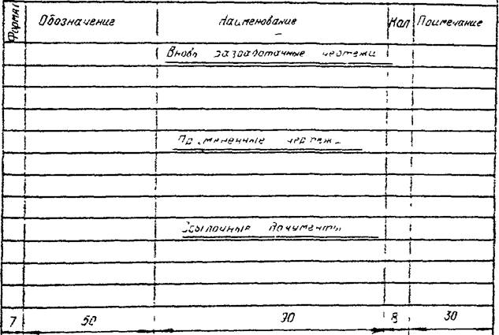
ПРИМЕЧАНИЯ:
1. В графе "Формат" указывают формат документа данного обозначения, если он выполнен на одном листе. Если документ выполнен на нескольких листах, то в графе "Формат" проставляют звездочку, а в графе "Примечание" указывают форматы, на которых выполнен этот документ, в порядке их возрастания, например: А4, А2, А1.
2. В графе "Обозначение" указывают полное обозначение документа. В разделе "Ссылочные документы" в графе "Обозначение" помимо обозначения документа при необходимости указывают наименование и шифр организации, выпустившей документ.
3. В графе "Наименование" указывают наименование документа в полном соответствии с наименованием, указанным в его основной надписи (штампе) или на титульном листе.
4. В графе "Количество" указывают общее количество листов документа.
5. В графе "Примечание" указывают дополнительные сведения (п. 1 данных примечаний или, например, сведения об изменениях, вносимых в документ).
6. Количество строк, отводимых для наименования, или примечаний к одному документу не регламентировано.
ВЕДОМОСТЬ ОБЪЕМА РАБОТ
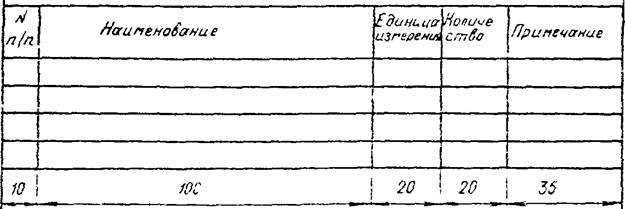
ПРИМЕЧАНИЯ:
1. При разработке ППР следует указывать: для комплексов - наименование строящихся объектов; для объектов - наименование монтируемых частей или конструктивных элементов.
2. В составе основных положений по монтажу конструкций объекта разрабатывают сводную укрупненную ведомость объемов работ.
ИТОГОВЫЕ
ТЕХНИКО-ЭКОНОМИЧЕСКИЕ
ПОКАЗАТЕЛИ
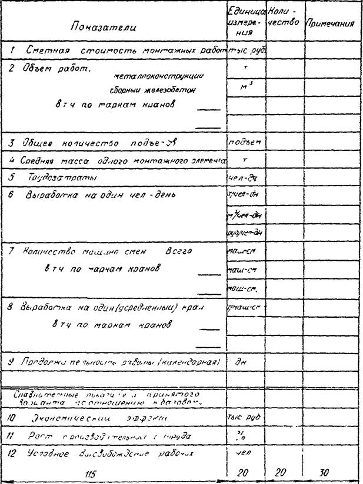
ВЕДОМОСТЬ
ВРЕМЕННЫХ ЗДАНИЙ И СООРУЖЕНИЙ
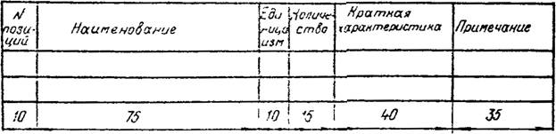
ПРИМЕЧАНИЕ.
В ведомость следует вносить все временные здания, сооружения (включая дороги), необходимые для производства монтажных работ; в ведомостях для Основных положений следует указывать только основные из перечисленных позиций.
ВЕДОМОСТЬ
МОНТАЖНОГО ОБОРУДОВАНИЯ, ПРИСПОСОБЛЕНИЙ И ТАКЕЛАЖА
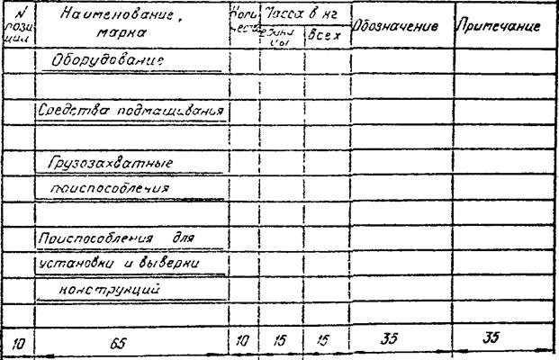
ПРИМЕЧАНИЯ:
1. В графе "Обозначение" следует указывать номер чертежа, ГОСТа или ТУ.
2. В конце каждого раздела проставляется итоговая масса расхода металла, а в конце таблицы - общая масса расхода металла на вновь изготавливаемые конструкции.
РАСЧЕТ ЭЛЕКТРИЧЕСКИХ НАГРУЗОК (пример заполнения)
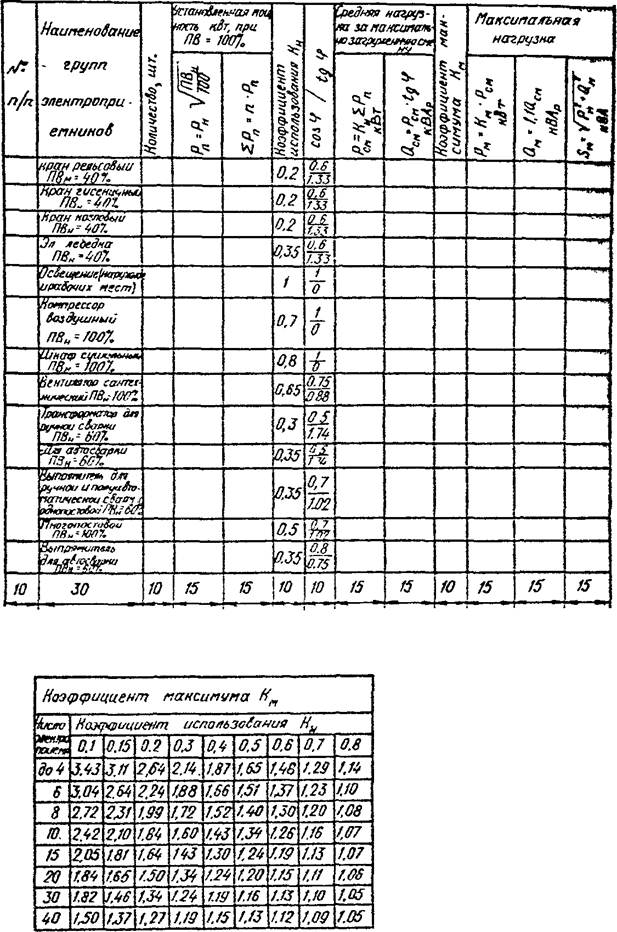
Примечания:
1. Характеристики электроприемников указывают по каталожным данным.
2. Значения КМ принимают по таблице.
3. РН - нормативная мощность электроприемника (суммарная мощность установленных электродвигателей).
ВЕДОМОСТЬ МЕХАНИЗИРОВАННОГО
И РУЧНОГО ИНСТРУМЕНТА
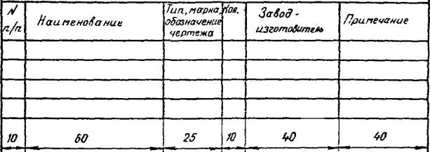
ПРИМЕЧАНИЕ.
Нормативы потребности в инструменте для монтажа конструкций одноэтажных промзданий, для монтажа легких конструкций, а также бригадные нормокомплекты разработаны ВНИПИ Промстальконструкция.
КАЛЬКУЛЯЦИЯ
ТРУДОЗАТРАТ, ЗАРАБОТНОЙ ПЛАТЫ,
МАШИННОГО ВРЕМЕНИ И ГРАФИК РАБОТ
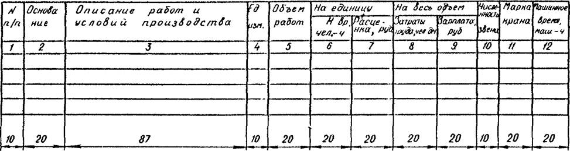
ТЕХНИКО-ЭКОНОМИЧЕСКИЕ ПОКАЗАТЕЛИ
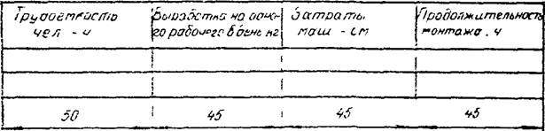
ТАБЛИЦА СХЕМ CTPOПOВОК
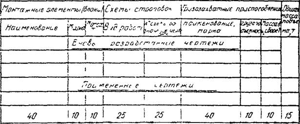
ПРИМЕЧАНИЯ:
1. В графе "Вид работ" следует указывать, например: монтаж, погрузка, разгрузка и т.д.
2. В графе "Масса в сборе" следует указывать массу грузозахватных приспособлений в сборе с соответствующими стропами.
3. В графе "Общая масса подъема" следует указывать массу поднимаемого элемента (блока) конструкций вместе с массой соответствующих грузозахватных приспособлений в сборе.
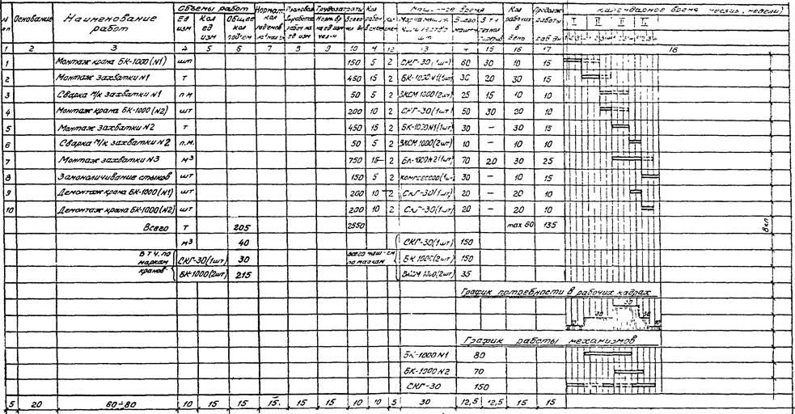
ПРИМЕЧАНИЯ:
1. При заполнении графы 1 указывают порядковый номер позиций, перечисленных в графе 3.
2. При заполнении графы 2 указывают конкретный пункт и наименование нормативного документа, на основании которого заполняют графы 7, 8 или 9 (ЕНиР, ВНиР, ТНиР, местные нормы, техническое задание на разработку ППР и др.).
3. При заполнении графы 3 приводят перечень всех работ, отраженных в календарном графике (п. 11.2 данной инструкции).
4. Графы 4 и 5 заполняют по рабочим чертежам монтируемого объекта, графу 6 - с учетом укрупнения монтируемых конструкций.
5. Графу 7 заполняют для тех работ, которые нормируют по количеству подъемов (определенному на основании EНиP) на 1 маш.-смену.
6. Графу 8 заполняют для тех работ, которые нормируют по плановой выработке на одного рабочего (в соответствие с п. 11 технического задания на разработку ППР - см. приложение 1 данной инструкции, при этом количество основных монтажных кранов определяют из расчета 14 - 18 человек (включая рабочих на всех вспомогательных операциях) на один кран.
7. Графу 9 заполняют для тех позиций календарного графика, которые нормируются по ЕНиР.
8. Графу 10 заполняют данными от умножения (деления) данных графы 5 на данные графы 9 (8). Продолжительность рабочего дня следует принимать равной 8,2 ч.
9. При заполнении графы 11 численность звена принимают по данным ЕНиР. При расчетах по плановой выработке на одного рабочего графу 11 заполняют из расчета 14 - 18 рабочих на один основной монтажный кран.
10. Количество кранов (графа 13) определяют, исходя из данных графы 14 с учетом директивных сроков монтажа объекта.
11. Графу 14 заполняют суммой данных графы 15 и данных, полученных делением данных графы 10 на дачные графы 11.
12. Слева от графика работы механизмов приводят полное время для каждого механизма равное сумме маш.-смен граф 14 и 15 для данного механизма.
13. Двухсменную работу обозначать двойной линией, односменную - одной линией, технологические перерывы соответственно пунктирными.
Спецификация на стропы (пример заполнения)
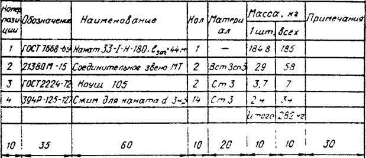
ПРИМЕЧАНИЕ.
В графе "Обозначение" следует указывать номер чертежа, ГОСТа или ТУ.
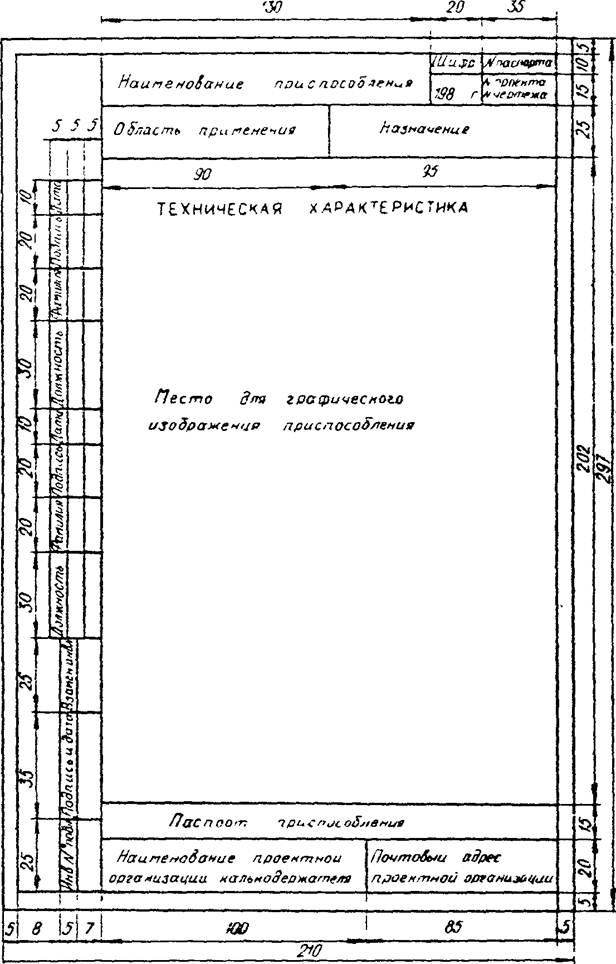
СОДЕРЖАНИЕ